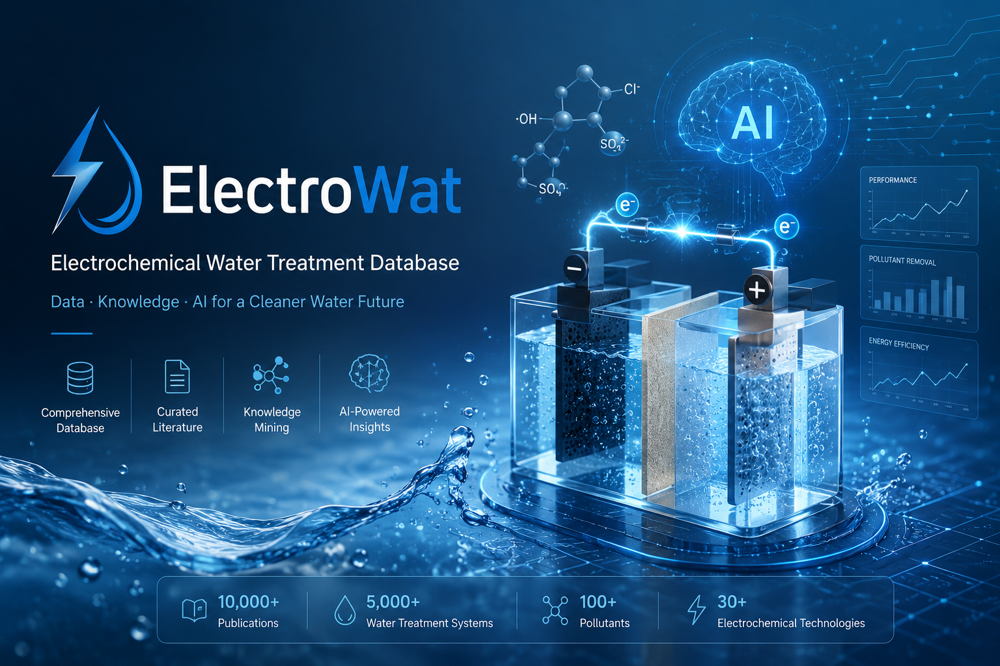

标准化元数据
涵盖污染物、浓度、电解质、pH、电流密度等 21 项核心字段，遵循 FAIR 数据原则。
开放科学 · 电化学水处理
ElectroWat DB 面向全球环境电化学与水处理社区，整合电极材料、反应器构型、工艺参数及污染物降解指标等多源实验与文献证据，构建符合 FAIR 原则的大规模、结构化开放数据库。依托AI驱动的知识挖掘框架，实现了自动信息抽取、语义关联与数据标准化，将分散科研信息转化为可分析、可共享、可模型训练的数据资源。
作为面向 AI4Science 的环境电化学数据基础设施，ElectroWat DB 可支撑污染物去除效能与反应速率常数预测、电极材料的逆向设计、工艺优化、机制挖掘、以及研究热点演变与知识网络的定量分析。平台进一步为机器学习驱动的科学发现、工艺放大和智能水系统开发提供数据底座，推动环境电化学领域从经验试错向数据驱动的智能范式转变。
FAIR原则是科学数据管理的国际准则，强调数据应可发现（Findable）、可访问（Accessible）、可互操作（Interoperable）和可重用（Reusable）。

每一条记录均关联原始文献 DOI、实验条件与质量平衡校验标记， 支持跨工艺、跨电极体系的定量比较与机器学习特征工程。
涵盖污染物、浓度、电解质、pH、电流密度等 21 项核心字段，遵循 FAIR 数据原则。
收录表观速率常数、Tafel 斜率、传质系数与降解中间产物谱系。
电极组成（BDD、PbO₂、Ti/IrO₂ 等）与污染物去除效率的结构化关联。
RESTful 与 GraphQL 接口，支持批量导出 JSON、XLSX 及 BibTeX 引用格式。
| ID | 污染物 | 浓度 | 工艺 | 电极 | 去除率 | 比能耗 | DOI |
|---|
我们致力于构建开放、可信、可持续的电化学水处理数据生态，连接全球研究者与工程实践者。
使用本数据库发表研究成果时，请引用以下条目以支持开放科学生态。
Zhang, L., et al. (2024). ElectroWat DB: An open database for electrochemical water treatment. Environmental Science & Technology Data, 8(2), 112–128. https://doi.org/10.xxxx/electrowat.2024
在这个网页上，我们分享了一系列与电化学水处理相关的机器学习和深度学习文章以及高质量的综述。您可以使用每个条目下提供的链接下载这些数据集。